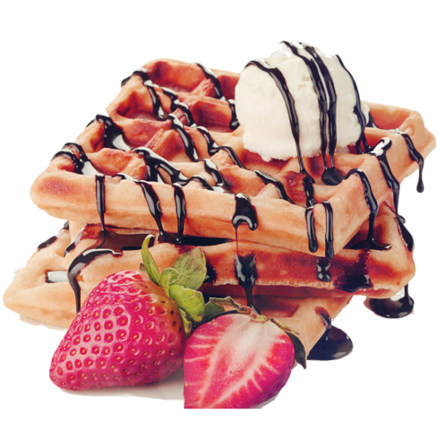

Enjoy your meal with
Waffles
Order Now
A waffle is typically made from a batter that is cooked between two plates with a pattern of indentations or raised ridges. It has a crispy exterior and a soft, fluffy interior, and served with toppings such as butter, syrup, fruit, or whipped cream. Waffles also made in variety of shapes and sizes, from small round ones to larger rectangular ones, and you can also flavored it with different ingredients such as chocolate chips, blueberries, or cinnamon. They are also most of the popular breakfast.